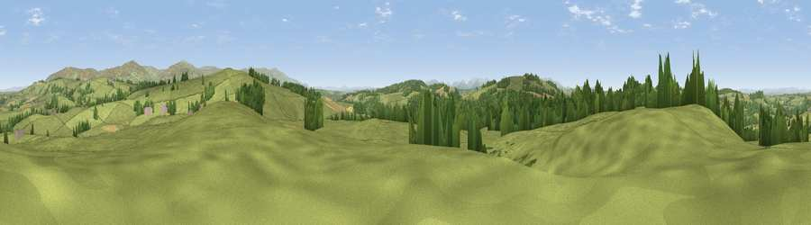

Viewpoint near Ainstable
#10328 in England · top 48% of its area beats it · near Ainstable · footpathWhere it is
The exact computed spot (NY 51975 44925). Click the marker for map links.
Public access: a public right of way passes within 23 m of this spot. Computed from Natural England's CRoW access layer and OpenStreetMap rights of way — not the legal definitive map. Always verify locally.
The view, rendered

A 360° render of this exact spot computed from the terrain model, tree cover and land cover — summer colours, afternoon light, calibrated against photographs of famous viewpoints. Real trees, hedges and buildings will differ in detail.
The panorama
Grey silhouette: terrain skyline in each direction (720 bearings, Earth curvature and refraction included). Dashed green: skyline with trees (+15 m) and buildings (+8 m) as obstacles. Blue strip: how far the ground is visible on each bearing.
Where the view opens
Wedge length = distance to the farthest visible ground on that bearing (vegetation-aware). Rings at 10, 25 and 50 km.
What fills the view
74% grassland · 20% woodland · 6% cropland ·
Angular shares of the visible panorama (visual magnitude), not map area. Landscape diversity 0.32 (0–1 Shannon).
Key numbers
More beautiful places nearby
The staircase of upgrades: each row has a higher view potential than everything closer. Driving times are estimates from straight-line distance, calibrated against real road routing — check an actual route before setting out.
| Place | Direction | Drive | Score |
|---|---|---|---|
| Ruckcroft Hill | E · 1 km | ~4 min | 72.5 |
| Viewpoint near High Hesket | SW · 3 km | ~7 min | 74.4 |
| Barrock Fell | WNW · 6 km | ~12 min | 81.1 |
| Viewpoint near Watermillock | SSW · 25 km | ~40 min | 82.6 |
| Viewpoint near Watermillock | SSW · 25 km | ~40 min | 83.5 |
| Skiddaw South Top | WSW · 30 km | ~48 min | 85.8 |
| Viewpoint near Applethwaite | WSW · 31 km | ~49 min | 86.7 |
| Long Side | WSW · 32 km | ~49 min | 89.5 |
54.79690, -2.74850 · source: screening · position refined by local search. Computed location — check access rights before visiting.